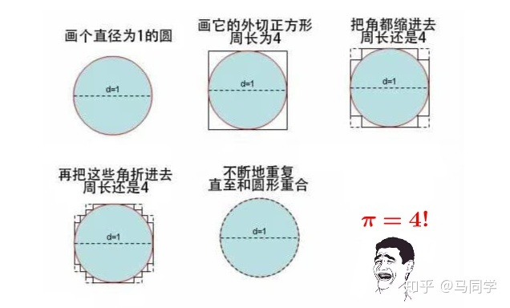

6LN - 函数的更多性质
一些闲话
人人都可以讲课
所以每次回家之后可以把讲义盖上, 看看自己能不能讲的动, 如果可以, 那就太好了!
事实上, 这个东西在以后进行更加复杂的学习也是一样的, 通过自己给自己讲述, 我们就可以得到更加优秀的理解.
正所谓"温故而知新, 可以为师矣." 大家加油!
试着画一点函数图像吧!
- \(f(x)=x^4+2x^2+1\)
- \(g(x)=|x-1|-|x-2|\)
- \(h(x)={1/(x^2-2x+2)}\)
为什么 \(h(x)\) 是平的?
- 因为二次函数那边也是平的(当 \(x\) 变化的时候 \(y\) 的变化很小).
- 这就是导数的直观感受
猜一猜 \(h(x)={1/(x^2-2x)}\) 的函数图像.
- 本质上还是求一堆倒数.
- 玩多了, 会的越多, 不会的也越多.
奇偶性
奇偶性cont'd
-
运算
- 奇函数+奇函数=?
- 奇函数+偶函数=?
- 奇函数 \(\times\) 奇函数=?
-
应用: 给一半, 求另一半.
-
看Ex1.
- 我会画图...
- 但是我不知道那一边怎么样.
- 代数推演! 不妨让 \(-x\) 出现.
- 又因为 \(f(x)=-f(x)\) .
- 小心0. !
-
看Ex.2(1,2,3).
- 提示! 定义域!
- 参考答案: 大中小, \((1/3,2/3),(0,1/3)\) .
- 自己重视, 要有痛感.
-
看3.(1)
- 难看? 先分离常数.
- 然后看上下的奇偶性
- 画一个图(A).
-
看3. (2)
- 想办法搞出来个 \(-x\) 玩玩.
- 然后解方程组即可.
其实, 任何定义域对称的函数都可以被解成一个奇函数和一个偶函数的和.
试试看拆一下 \(f(x)=x^3+3x^2+2x+1\) .
- 别忘里面代, 有点麻烦.
- 很多时候我们浇了一个高级一点的普适性方法, 大家就不用基础的方法了.
- 其实他们是共存的. 最通用的方法应该交给计算机完成.
探索
如果是复合函数, 那么函数的奇偶性与内外层的奇偶性有什么关系?
混入了非奇非偶的会怎么样?
对称性: 轴对称
更一般的对称性是怎样的?
像上节课一样, 画一个小人
代数化的表示
- \(f(a+x)=f(a-x)\) , 关于 \(x=a\) 对称. (轴对称)
- 我们会代换! 于是有了 \(f(x)=f(2a-x)\) .
- 那么 \(f(a+x)=f(b-x)\) , 说明什么?
我们来试试看! Ex4(1)(2).
- 是不是可以用给一半, 求一半的原则?
- 只不过这里是 \(4-x\) 必须出现了!
- ⑨. !
休息与闲聊

关于为什么.
另一个芝诺悖论: 关于乌龟和追乌龟的人的故事
长跑健将阿基里斯与距他前面不远处的一只乌龟一同起跑, 当阿基里斯到达乌龟的起跑点位置A时, 乌龟已经跑到了位置B, 当阿基里斯跑到位置B时, 乌龟又向前跑了一段距离, 到达位置C, 阿基里斯继续向前跑, 当到达位置C时, 乌龟再到达另外一个位置, 就这样, 阿基里斯永远追不上这只乌龟……
涉及到当代微积分中的核心概念: 不同的无穷小加在一起有可能无穷大.
无穷大还是有级别的.
为什么有的近似可以, 有的不行?
大学我们会学! 加油!
对称性: 中心对称
仿照轴对称, 请写出中心对称的三个式子.
还是画小人
- \(f(a+x)=2b-f(a-x)\) , 关于 \((a,b)\) 对称.
- \(f(x)+f(2a-x)=2b\) , 关于 \((a,b)\) 对称.
- \(f(a-x)+f(b+x)=m\) , 关于 \(((a+b)/2,m/2)\) 对称.
看Ex4(3).
- 既要轴对称又要中心对称?
- 注意开区间和闭区间, 实点和虚点没标, 是习惯的硬伤.
- 注意奇函数的定义!
- ⑨. !
注意 Ex(4).
指数函数(exponential function)
从逆运算的角度看指数函数
我们学过加法, 乘法, 它们都有逆运算.
指数也有, 我们后面回学习.
总之看下指数的定义: 有点难打, 大家应该都会, \(n\) 个 \(a\) 相乘. 底数, 指数, 幂.
- 指数是正整数.
- 我们要拓展! \(\N^*\to \N, a^0=1\) .
总结: 学到了什么
- 如何复习, 如何看笔记.
- 有哪些函数的性质, 以及它们的代数形式, 几何形式.
- 指数函数该如何拓展(下一次的悬念).
- 指数的逆运算是什么(下几次的悬念).
End.
Don't Panic.
如果你还没有入门, 仍然感到恐惧, 请记住：坚持住, 进入未知领域, 从简单的、能理解的东西试起, 投入时间, 就有收获. 从这里开始, 你就能慢慢克服恐惧了. 我们为大家准备了的这些讲稿基本上是按照上课的思路来的. 如果你能好好运用这些材料, 你就会感受到真正的力量!